La resistencia al corte de un suelo viene dada por:
Donde $c'$ y $\phi'$ son parámetros intrínsecos del suelo, mientras que $\sigma' = \sigma - u$ dependerá de las variaciones de los esfuerzos totales debidos al efecto de la presión de poros ($u$).

La infiltración es el proceso mediante el cual el agua de la superficie del terreno, como la proveniente de la lluvia o el riego, se introduce y se mueve hacia el interior del suelo a través de sus poros.
El agua llega a la superficie y comienza a infiltrarse.
PluviómetroEl suelo se humedece de arriba hacia abajo.
Sensor de humedadAl humedecerse, la succión matricial tiende a cero.
TensiómetroSe pierde la resistencia que aportaba la succión.
σ′ calculadoSe generan presiones de poros positivas.
PiezómetroCuando la resistencia cae por debajo del esfuerzo actuante.
Deformación (Mód. 4)Fenómeno por el cual un líquido, como el agua, asciende o desciende dentro de los poros de un material debido a la atracción entre las moléculas del líquido y las paredes sólidas del material, superando en algunos casos la fuerza de la gravedad.
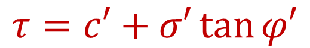
Se refiere a la presión negativa que el agua experimenta en los poros del suelo cuando el contenido de agua es bajo. Ocurre debido a las fuerzas de atracción entre el agua y las partículas de suelo (tensión superficial).
El agua en el suelo y los fenómenos asociados a esto se pueden monitorear a diferentes escalas temporales y espaciales.
Monitoreo regional de humedad superficial a gran escala.
| Variable | Zona donde importa | Sensor | Qué te dice |
|---|---|---|---|
| Presión de poros positiva, nivel freático | Saturada | Piezómetros | Esfuerzo efectivo, estabilidad, consolidación |
| Succión matricial (presión negativa) | No saturada y parcialmente saturada | Tensiómetros | Resistencia aparente y cuánto falta para saturarse |
| Contenido volumétrico de agua | No saturada, somera | Sensores de humedad (TDR / FDR) | Avance del frente húmedo y grado de saturación |
| Lluvia (entrada de agua) | Superficie | Pluviómetros y radar | Cuánta agua llega y si se superan los umbrales |
| Humedad superficial regional | Primeros centímetros, escala regional | Satélites (SMAP, SMOS) | Tendencias espaciales y humedad antecedente |
Miden el contenido volumétrico de agua en el suelo mediante la variación de la frecuencia de una onda electromagnética que se transmite por el suelo.
El sensor emite ondas electromagnéticas de una determinada frecuencia en el suelo. A medida que estas ondas se transmiten a través del suelo, la presencia de agua afecta su velocidad. El sensor mide el tiempo que tarda la onda en viajar, y esto se relaciona con la cantidad de agua presente.
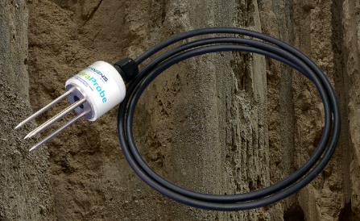
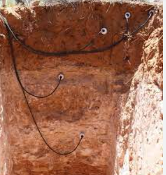
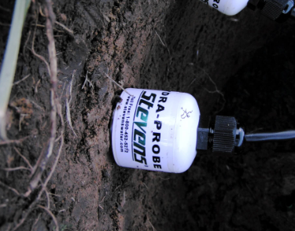
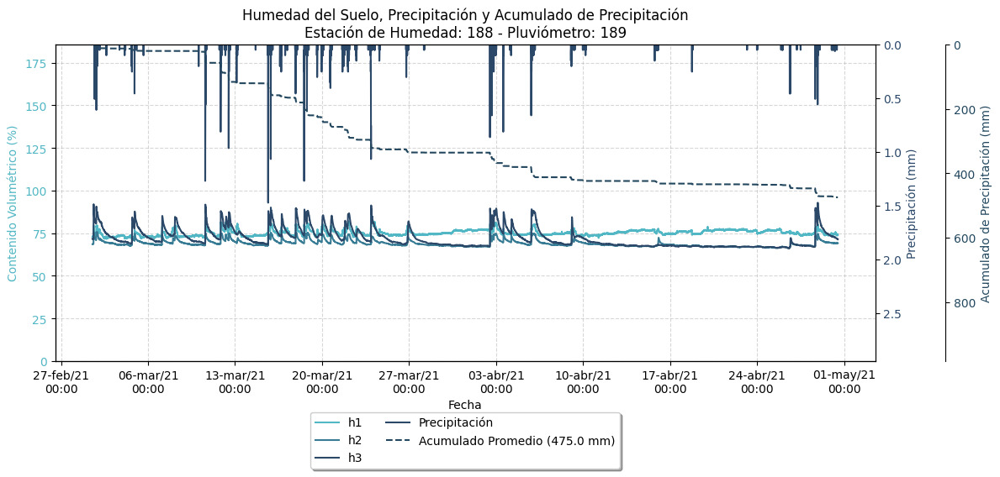
Humedad volumétrica a tres profundidades (h1, h2, h3) y precipitación acumulada · estación 188, pluviómetro 189
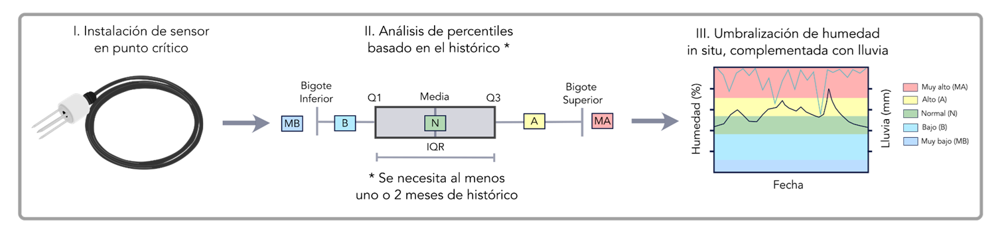
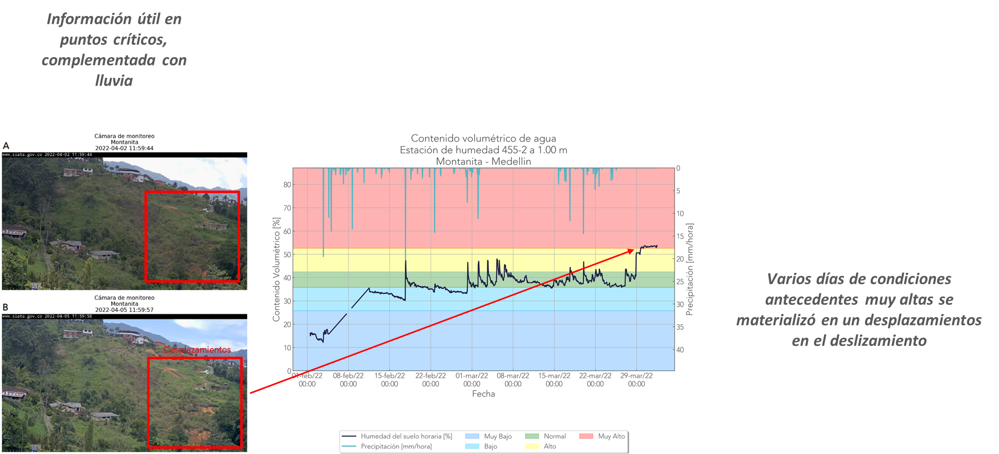
Son instrumentos avanzados para medir la succión o potencial matricial del agua en el suelo. Utilizan una cápsula de cerámica o piedra porosa para medir la tensión con alta precisión.
La succión ejercida por el suelo sobre el agua dentro de la piedra porosa es medida por un sensor de presión dentro del dispositivo. El sensor digital convierte esa información en datos sobre el potencial matricial del suelo. Los datos se registran y pueden ser transmitidos de manera remota o leídos en el sitio.
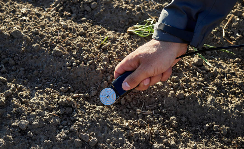
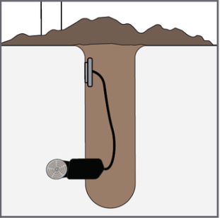
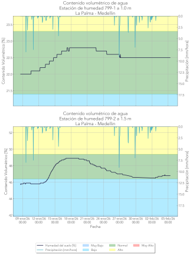
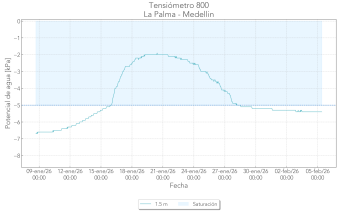
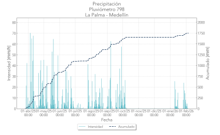
Son instrumentos utilizados para medir la presión del agua en el subsuelo, particularmente el nivel de agua o presión en acuíferos y el nivel freático.
Son esenciales en proyectos de geotecnia, construcción y manejo de recursos hídricos para evaluar la estabilidad de suelos y estructuras bajo condiciones de carga de agua.
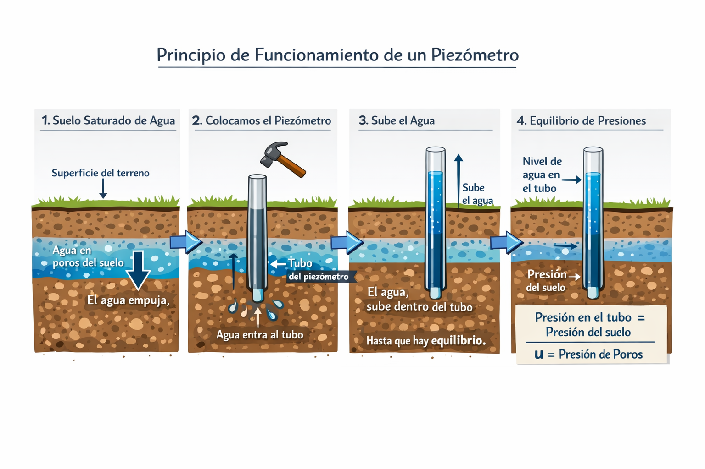
El nivel de agua dentro del tubo se mide con una cinta métrica o electrónicamente. Este nivel indica dónde está el nivel freático (la superficie donde el suelo cambia de parcialmente saturado a saturado).
La presión medida se puede convertir en datos continuos de nivel de agua o presión de poros, que se interpreta para entender las condiciones del suelo ante eventos dinámicos.
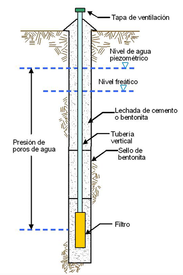
Las bandas de colores corresponden a percentiles asociados al nivel piezométrico.
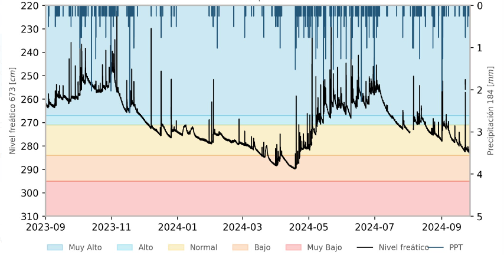
Los satélites miden la humedad del suelo principalmente a través de técnicas de teledetección que utilizan diferentes tipos de sensores para captar señales desde el espacio.
Estas técnicas permiten obtener información sobre el contenido de agua en las capas superficiales del suelo, normalmente hasta unos pocos centímetros de profundidad.
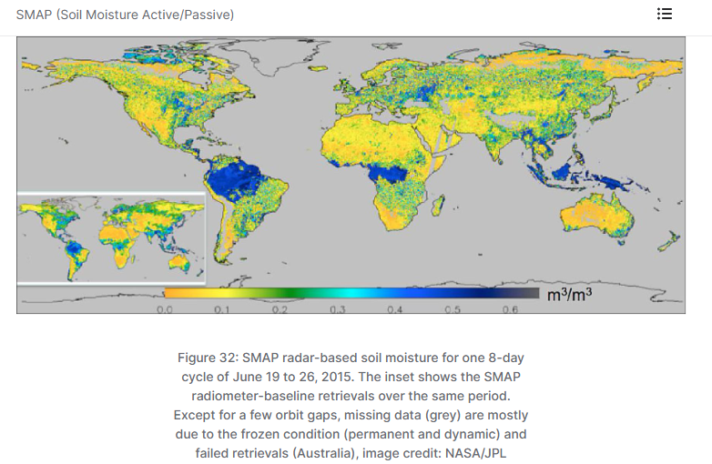
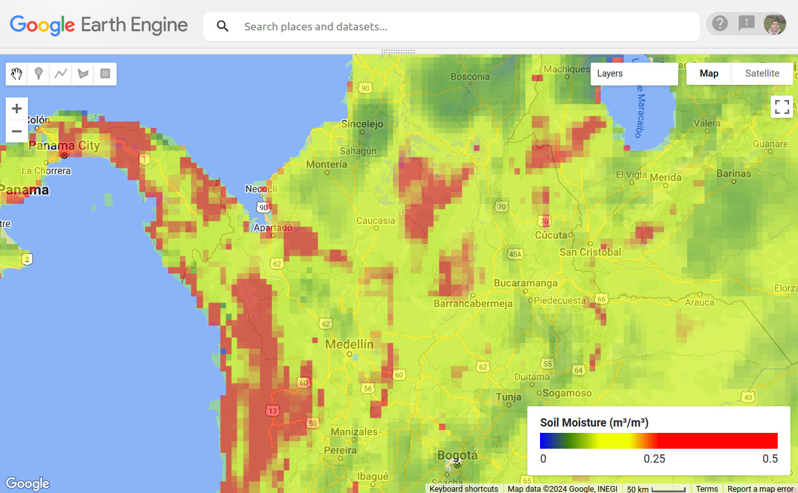
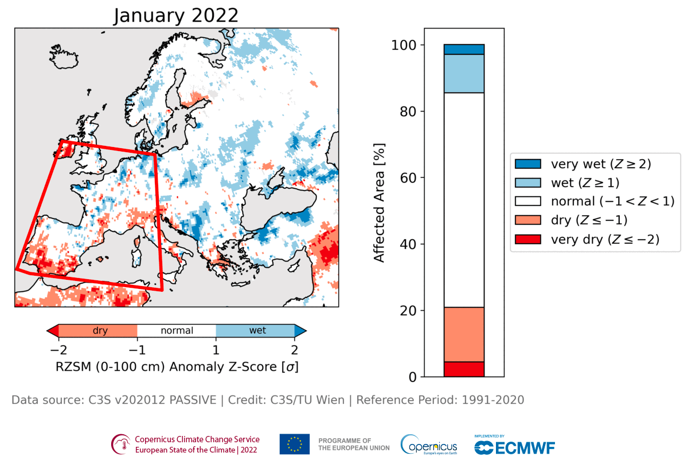
federicogmz.github.io/instrumentacion-geotecnica/lecturas.html#m3